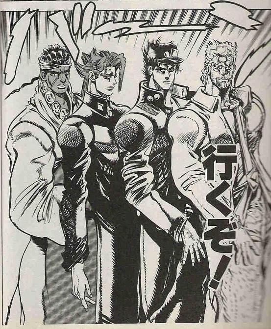

チーム開発 01 JS 選手権
チーム開発 01 JS 選手権とは
- JavaScript の集大成！！
- JavaScript のみを使ってセカイを変えるアプリケーションを作ろう！！
- チーム開発！！！
なにつくるんじゃ？？
基本的に何を作っても OK！
- オンラインリアルタイムじゃんけん
- 無限マインスイーパ
- グラディウス
- DVD をおすすめするチャットボット
（JavaScript 以外を使っても OK．．．ただし評価基準は同じッ）
チーム編成
今回はこちらで決めました！
| チーム A | チーム B | チーム C |
|---|---|---|
| 高田陽介 安武徳 内田与陽 | 清島裕大 藤村里美 藤﨑文崇 | 塩月康大 堀井麻友美 |
発表
発表会概要
2021/11/16（火） の 10:30 から各チーム 5 分で発表！（+適宜質疑など）
- 企画の概要&価値，プロダクトの紹介，実装の工夫，など．
- GGA のプレゼンを意識．．！！！（<- プレゼンの練習も大事！）
- 発表順はランダム（当日決めます）
- GGA 形式で投票 🗳️
発表に含める内容
- このアプリケーションはなにか？何を達成するのか？
- アプリケーションのデモ．
- 上記を達成するために工夫した点，苦戦した点．
- チーム内の役割分担．
進め方のの tips
仕様書を作ろう！
- 誰のためのどんなアプリケーション？？どんな画面が必要？？
- アプリケーションが実現することを明確にしよう！
- （できるだけ細分化して）必要な機能をリストアップ！
- 試行錯誤しながらそれぞれを単体で実装 → 組み合わせ！
- つくりながら仕様書はアップデート！
スケジュールをつくろう！
- 目標を複数設定！
- （最低限の機能，予想以上に進んだら．．．，など）
- スケジュールは都度更新！ 毎日進捗に応じて見直す！
その他
- プロダクトに名前をつけよう！
- （できる人はデプロイすると更に良いです）
評価規準
企画点と技術点を下記の基準で評価！
「企画点」「技術点」をそれぞれ算出し，平均して「総合点」とします！
表の対応に従って計算し，点数が最も少ないチームが優勝！！
| 評価 | 点数 |
|---|---|
| S | 1 |
| A | 2 |
| B | 3 |
| C | 4 |
| D | 5 |
企画点（アイデア基準）
- 使ってみたい，おもしろいと感じるプロダクトか．
- 実現したいことが明確か．課題を解決できそうか．
- プレゼンのロジックが明確になっているかどうか．
技術点（コード基準）
- コードの量
- 実装の工夫（技術選定や工夫，読みやすさ，複数人でのコード管理など）
- プロダクトの完成度（アイデアを実現するために細かい部分まで作り込んでいるか，など）
最初の作業
まずは以下 2 つを決定し，slack に投稿！！
- チームリーダー
- チーム名
それでは．．．！
